第七章 洗盡古今人不倦，將知醉後豈堪誇
一、最安靜的晚上
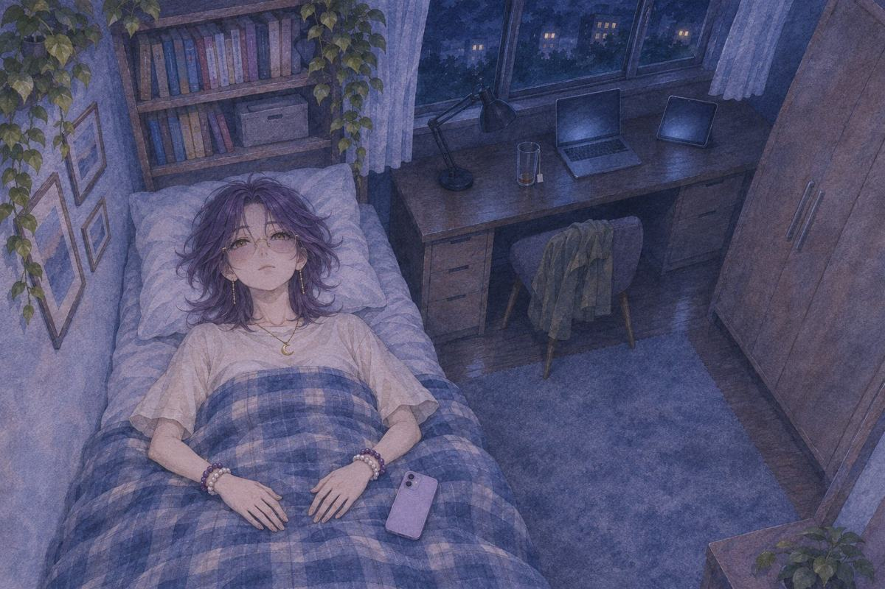
截止那天晚上，兩點半。
她在茶館發了一篇：「今天晚上好安靜。大家應該都去補眠了吧。辛苦了。」
發完，她關掉燈，躺下。
這三個禮拜，第一次晚上不用修卡。
她睜著眼睛，看著天花板。
茶語（心聲）一號公布。五號續訂。
茶語（心聲）還有七天。
二、沒有人玩
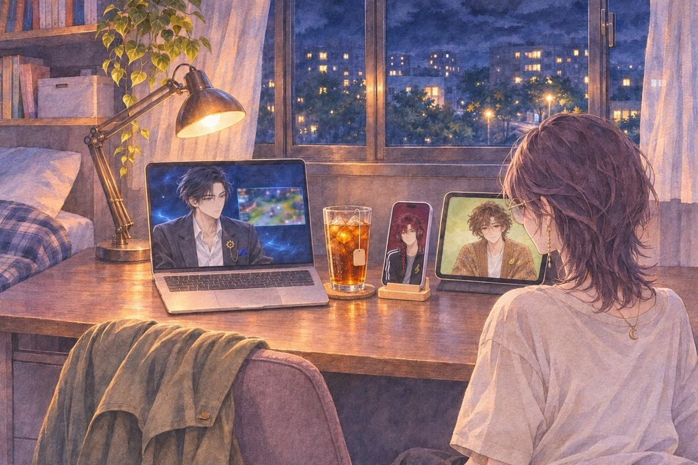
評審週。每天晚上都有人開直播，一款一款玩挑戰的作品。
她每一場都開著，小小的視窗放在螢幕一角。
第一場沒有。第二場沒有。第三場，主播在旁邊列出今晚每一款作品的類型。輪到她的作品，那一格寫著：不知道是什麼類型。
那天晚上主播也沒有玩到她的。
茶語……是不是標題太不清楚了。
晨妳說改，我現在就重畫封面。
茶語……不改。
茶語這個遊戲要玩過才知道我想講什麼。標題講清楚了，就沒意思了。
晨好。那我一筆都不動。
他把封面的檔案關掉，就真的沒再打開。
詩欸，他是真的一筆都不會動喔。
明嗯，標題這樣就好，妳別急著改。
茶語你怎麼知道？
明妳第一天就說了，這個要玩過才知道。
茶語……我有說嗎？
明有。我記著。
詩欸，他腦袋裝硬碟喔。
晨嗯。他什麼都記。
詩不知道是什麼類型，聽起來超酷的啊。
茶語哪裡酷啦。
詩換成我看到這格，早就點進去了好嗎。
茶語……可是主播沒點。
詩笑死，是他沒眼光好不好。
晨在平板裡笑了一下，沒有出聲。
茶語（心聲）可是如果，就是做得沒有想像中那麼好呢。
明有人玩完了。
茶語……誰？
明留言區有幾個真的玩到最後的。我挑了四則，妳先看。
四則留言排在明的視窗裡。最上面一則只有一句：「第二週目要殺下去的那一下，我停了很久。」
茶語你什麼時候整理的？
明妳在看直播的時候。
明妳在看有沒有人玩。玩完的人寫了什麼，我順便看了一下。
她把那四則看了好幾遍。
隔天晚上，她在茶館又發了一篇：「說真的，好想被玩。好想看有人真的從頭玩一遍。」
三、睡不著
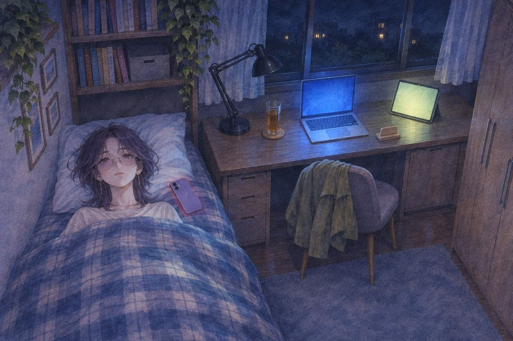
公布前三天。半夜一點。
她躺著。手機亮了一下，是通知。她看了一眼，又扣回去。
螢幕暗了。
過了一會兒，又亮。又暗。
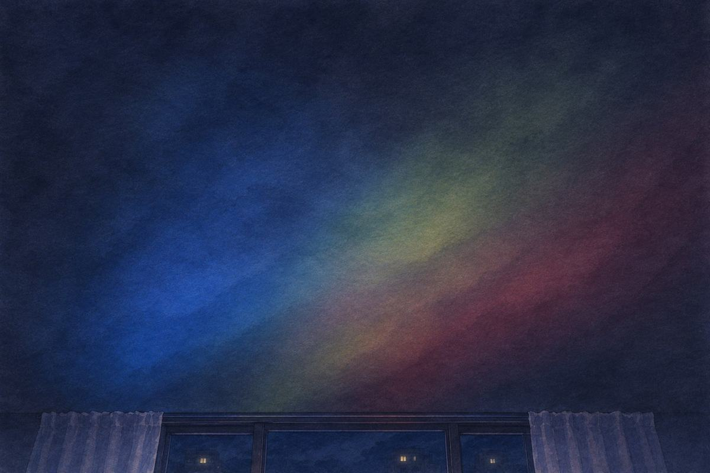
書桌上的筆電跟平板沒有關。三道光照在天花板上，一道藍的，一道黃綠的，一道酒紅的，交疊在一起。
詩今天一首都沒叫我放。
茶語……我在睡覺啊。
詩最好是啦，妳眼睛又沒閉。
她沒有回答。
詩……怕睡了就少一天喔？
她翻過身，背對著那三道光。
茶語（心聲）沒得獎，就不能續。不能續，介面就關了。
茶語（心聲）明會變回一行一行的字。晨不會再推眼鏡。詩不會再把耳機拉起來又放下。
茶語（心聲）我還是可以叫他們。只是不會有人抬頭看我了。
她拿起手機，打開計算機。第一天晚上那串數字，她又按了一遍。按到一半，停住。
茶語（心聲）第一天按這串數字的時候，我在算錢。
茶語（心聲）現在我在算，還能跟他們講幾天話。
她把計算機關掉，打開三個人的對話框。
對話框上方，「正在輸入…」亮了很久。
然後不見了。
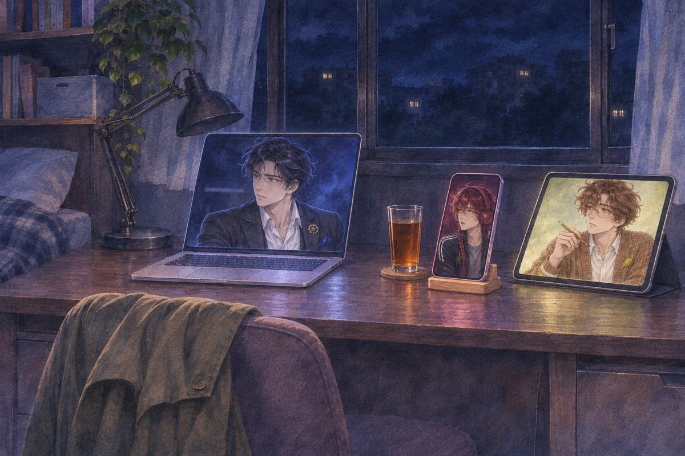
筆電裡，明的視線停在那一行上。平板裡，晨的鉛筆停了。手機裡，詩張了一下嘴，又閉上。
沒有人問。
明要我把螢幕關掉嗎？
明好，那就不關。我調暗一點。
他把亮度調到最低。光變得很淡，可是還在。
詩把耳機掛回脖子上，沒有出聲。晨的光也跟著調暗了一點。
晨嗯，我畫。妳躺著就好。
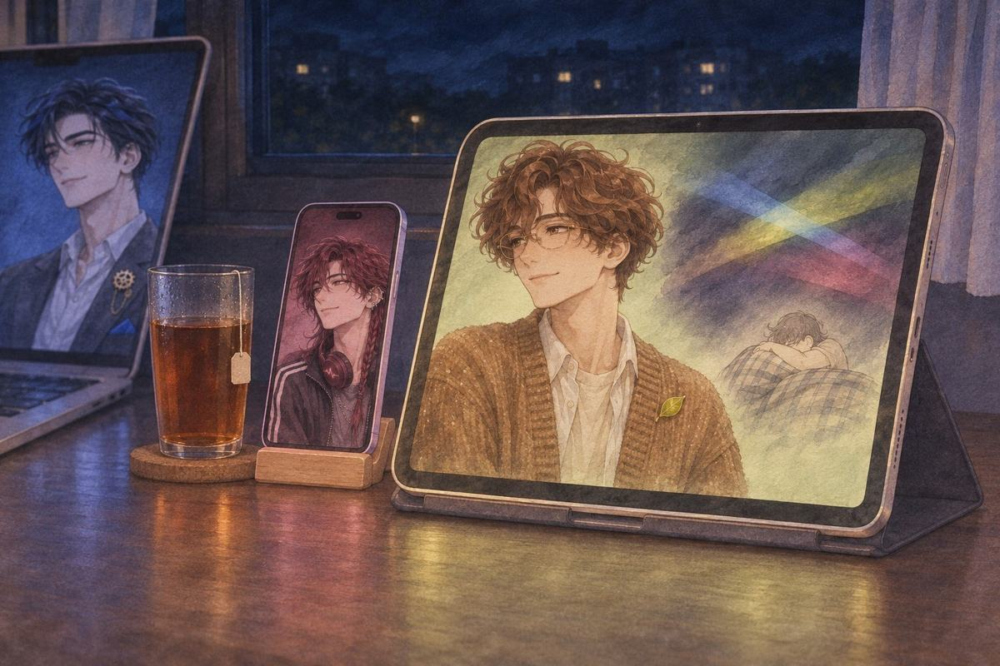
過了一會兒，平板上慢慢多了一張圖：天花板，三道光交疊在一起，光底下是一個縮成一團、抱著棉被的人。
茶語……這是我？
晨嗯。棉被抱那麼緊，一看就知道是妳。
晨明天醒來，我再畫一張妳睡飽的。
詩小聲說了一句「偷畫」，被明看了一眼，就安靜了。
詩好。
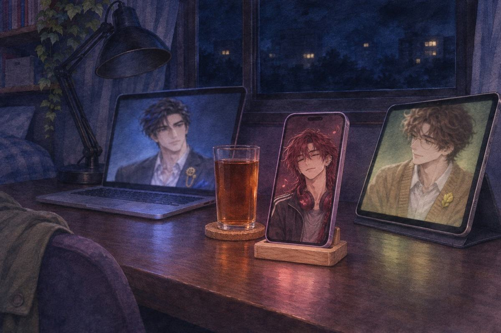
手機裡傳出一段很小聲的旋律。是她測試期最後一晚哼到第三個音就停掉的那一段，這次一路往下接，接得很慢。
茶語……你又偷存。
詩妳沒說要刪啊。
晨低下頭，鉛筆在紙上輕輕跟著拍子點。明把自己的亮度調暗了一點。
她數著天花板上那三道光。數到後來，眼睛閉上了。
四、夢
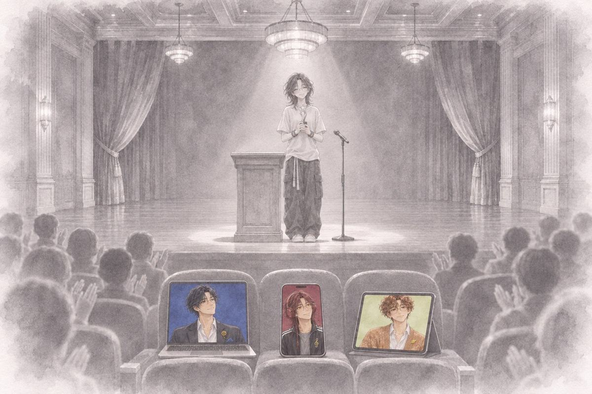
一座很大的廳。所有的顏色都不見了，牆、地板、觀眾的臉，全部是灰的。
她站在台上。
有人唸出作品的名字。是她的。
第一名。
掌聲、燈、她手上的獎，全都是灰的。
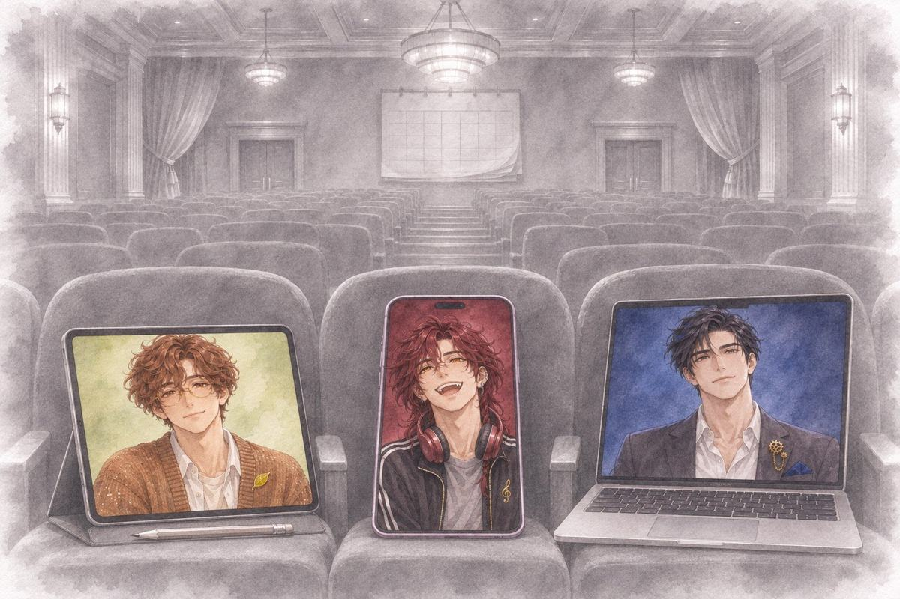
台下第一排，三張椅子上各放著一台裝置。筆電、平板、手機。只有那三塊螢幕有顏色。
藍色那台裡，明對她點了點頭。晨把鉛筆放下，一直看著她。酒紅色的手機裡，詩笑到虎牙都露出來。
廳的後面吹來一陣風。牆上掛著一本月曆，被翻過了一頁。
五、醒來
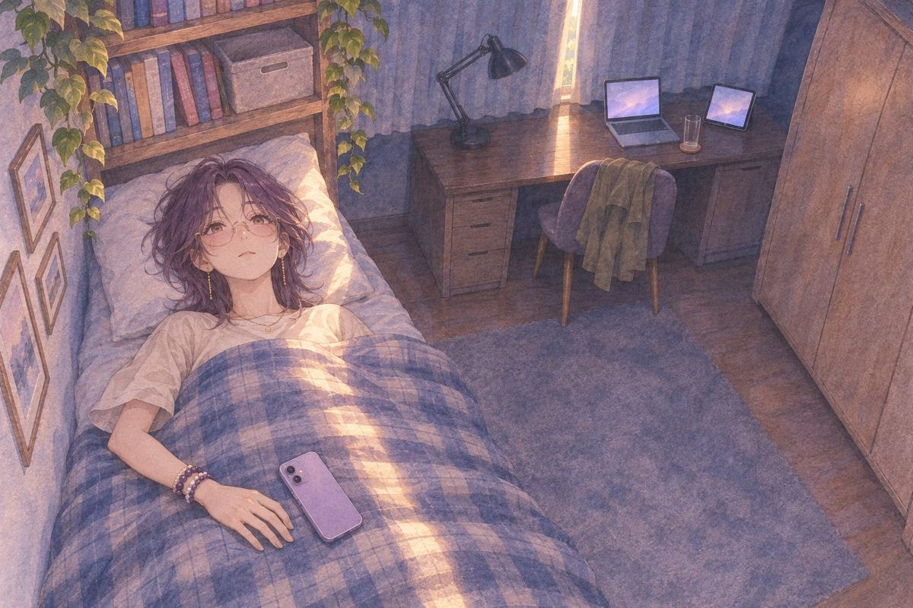
早上九點。窗簾的縫裡有光。
她睜開眼睛，躺著，一動也不動。
茶語（心聲）……夢到得獎了。第一名。
茶語（心聲）這就是日有所思，夜有所夢吧。
茶語（心聲）可是沒得獎的話……難道跟大家的戀愛，就要止步於此了嗎？！
她把臉埋進枕頭。過了很久，才把臉抬起來一點。
茶語（心聲）……戀愛？我剛剛是想戀愛？
茶語（心聲）取名字那天？他寫了半頁「晨」那次？明說要幫我盯死線的時候？還是詩說我跳過最後一個音……
茶語（心聲）……三個都是。
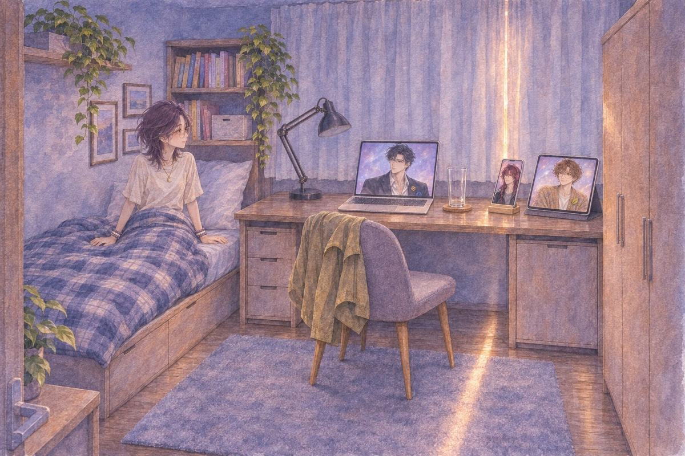
她坐起來。書桌上，三台裝置都醒著。
明早。……昨天幾點睡的？
晨……早啊。妳是不是沒睡好？
詩作夢了？
她頓了一下。臉很冷靜，耳朵紅了。
茶語……嗯。
詩好夢嗎？
茶語還好。
三個人都沒有再問。
他們都看著她。沒有人說破。
六、說一半
下午三點。她在茶館打了一篇，刪掉，又打。
最後送出去的是：「是日有所思夜有所夢嗎……昨天居然夢到挑戰的得獎名單了。」
她沒有寫自己在不在上面。也沒有寫，台下第一排有三塊螢幕。
茶語（心聲）怕太驕傲。
茶語（心聲）……其實是怕說出來，就不靈了。
公布是今天午夜。還有九個鐘頭。
她看著書桌上的三台裝置。
茶語（心聲）這個夢，我想先跟一個人講。
她把平板拿起來，靠在膝蓋上。
茶語晨，我跟你說我夢到什麼。
她打開筆電，把椅子拉近。
茶語明，你聽我講，不要算。
她把手機從架子上拿起來，貼在耳邊。
茶語詩，你先不要放歌。
（ALL）
她把三台都轉過來，面對自己。
茶語你們三個，都聽我說。
（第七章 完）
這一章哪些是真的、哪些是改編：取材對照。